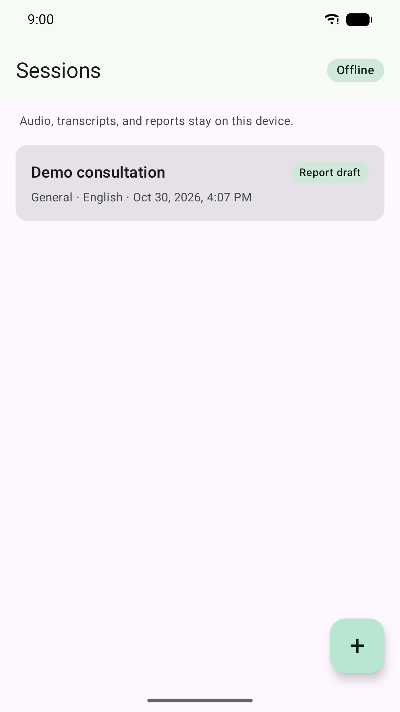
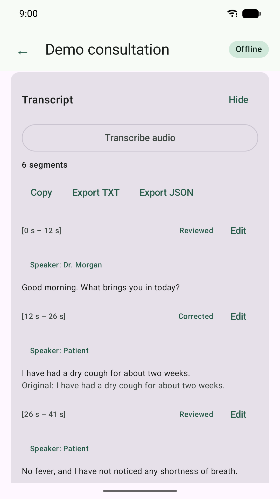
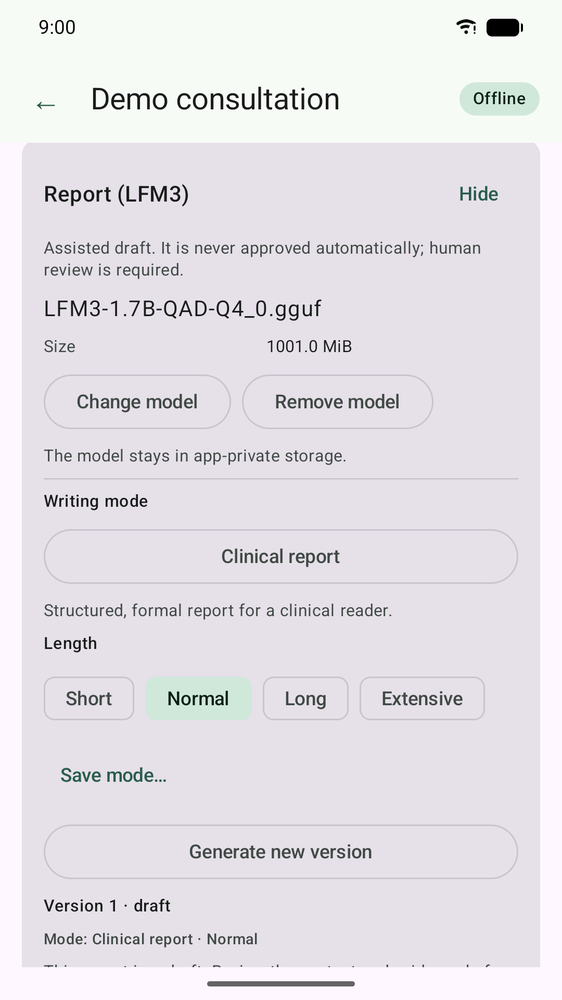
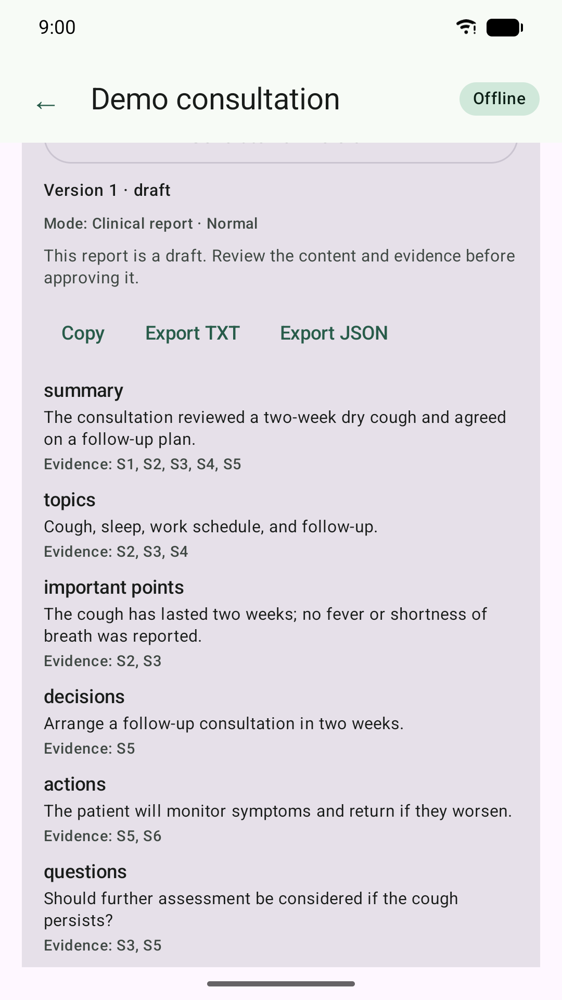

What it does
Record or import
Record audio with a visible foreground-service notification, or import MP3, M4A/AAC, WAV, and other supported files.
Transcribe on-device
whisper.cpp runs locally. Audio is normalised to 16 kHz mono WAV and never uploaded.
Review the transcript
Edit segments, keep the original text, mark review status, and assign speaker names and roles manually.
Draft a report
LFM3 generates a structured draft with per-section evidence links. Choose short, normal, long, or extensive output.
Use writing modes
Formal, clinical, executive brief, veterinary SOAP, and saved custom modes shape tone and structure.
Approve explicitly
Reports stay drafts until a human reviews the evidence and approves them. Nothing is auto-approved.
Export when you choose
Copy or export transcripts and reports as TXT or JSON through the Android system file picker.
Keep it local
No account, ads, analytics, telemetry, or cloud. Data stays in app-private storage unless you export it.
Screenshots
Synthetic demo data; no patient information.




Download and install
Download the latest APK from GitHub
- Download the ~1.1 GB APK on the Android device.
- Allow installation from your browser or file manager when prompted.
- Open the app and wait for the one-time model preparation screen.
- Create a session, then record or import audio.
Allow about 3 GB free storage: the APK plus the first-launch copy of the bundled LFM3 and whisper tiny models. If an older build with a different signing key is installed, uninstall it first.
Bundled models
LFM3-1.7B QAD Q4_0
~1.05 GB GGUF report model, run locally through llama.cpp. The app does not train or fine-tune the model.
whisper tiny
~77 MB transcription model. It favours size and speed; import a larger whisper.cpp model for better Spanish accuracy.
Privacy
The app has no INTERNET permission. There is no account, analytics, advertising, telemetry, remote logging, or automatic upload. Audio, transcripts, reports, modes, and models remain in app-private storage unless you explicitly export them.
Important limitations
Audio Report AI is a documentation aid, not a medical device. It does not diagnose, treat, cure, or prevent any condition and does not replace professional judgement. Generated reports are drafts and must be reviewed, corrected, and approved by a qualified person.
Version 0.1.0 does not yet include PDF export or richer report editing. The final ASR engine decision and physical-device M0 validation remain open.
Support and licenses
Troubleshooting / FAQ · Report an issue · Third-party notices · License texts
Never attach audio, transcripts, reports, patient names, or other clinical data to an issue.